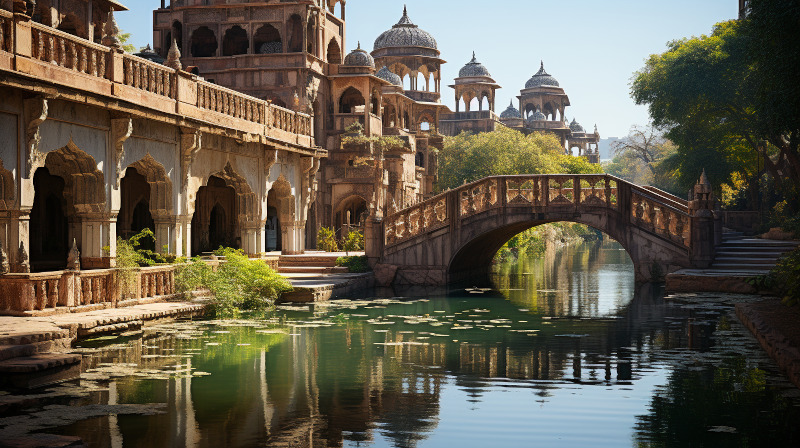

Figure 1: Glimkaren river from inside city limits of Vaabhath
Nestled amidst the endless sands of the Kaukloutan Desert, the oasis city of Vaabhath stands as a resplendent jewel in the harsh wilderness. It is the gateway to the mysterious lands of the Gathashim, a place where ancient traditions and cutting-edge discoveries coexist, and where the promise of wealth and knowledge beckons adventurers from far and wide.
Vaabhath’s heart beats to the rhythm of two life-giving rivers, Thurzayan and Glimkarun, which wind their way through the city like the veins of a colossal organism. Thurzayan, known for its mighty force, and Glimkarun, whose waters shimmer and glisten in the desert sun, sustain not only the people of Vaabhath but also a lush and vibrant oasis that defies the surrounding desolation.
Upon approaching the city, one is greeted by a remarkable sight. Towering minarets and ornate domes rise above the palm trees and gardens that grace the city’s edge. Vaabhath’s architecture, a blend of traditional Dwarvish craftsmanship and local design, creates an ambiance of both grandeur and mystique. Narrow, winding streets lead to bustling markets, where merchants peddle exotic wares brought from the farthest reaches of Naurrnen.
In the heart of the city, the bustling bazaar comes to life each day, a vibrant spectacle of colors, scents, and sounds. Here, traders from distant lands haggle over the finest materials, including Garunzal, Sangorn and Valmaur, sought-after treasures that are unearthed from the depths of the rumored Amearan ruins hidden beneath the desert’s shifting sands. The clinking of coins and the hum of negotiation fill the air as merchants and travelers alike come to seek their fortunes.
Beyond the market, you’ll find the towering spires of Vaabhath’s grand libraries and academies. These centers of knowledge have been the pride of Gathashim culture for centuries, and they continue to draw scholars and seekers from across the realm. It’s here that ancient texts are preserved, and the history of Naurrnen is carefully recorded.
As the sun dips below the horizon, casting a warm, golden glow upon the city, Vaabhath reveals its true allure. It’s a place where ancient traditions and cutting-edge discoveries coexist, where the promise of wealth and knowledge beckons adventurers from far and wide. While the origins of the Gathashim may not be any more mysterious than anyone else’s in Naurrnen, within the heart of Vaabhath, beneath the surface of this thriving metropolis, lies a secret that has eluded the grasp of all who have sought it—a secret that, for now, remains buried in the sands of time.